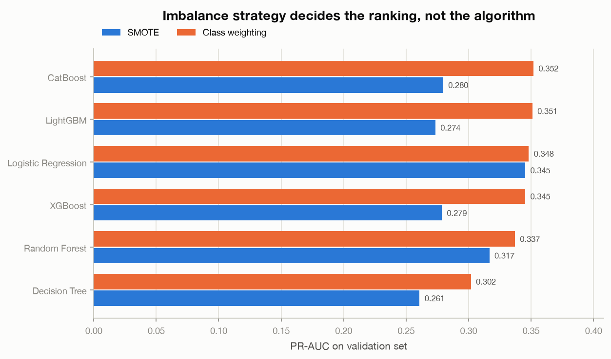
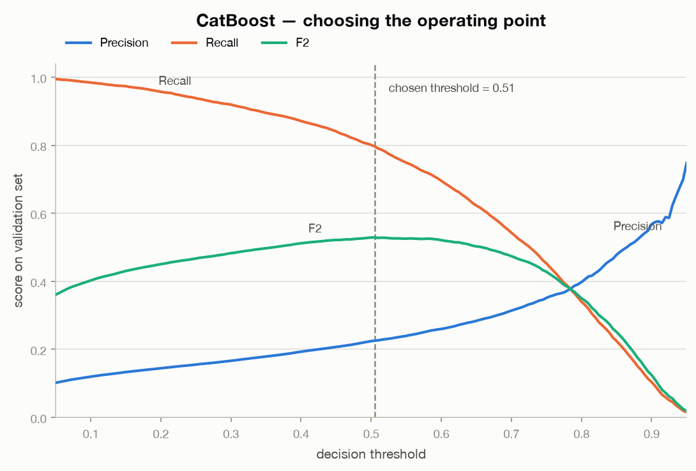
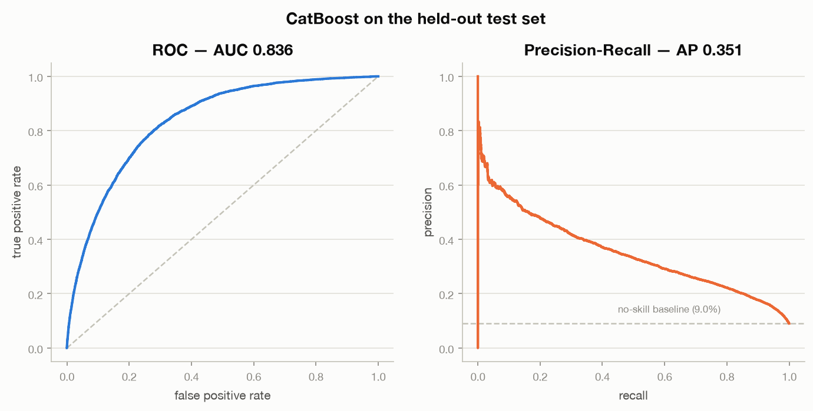
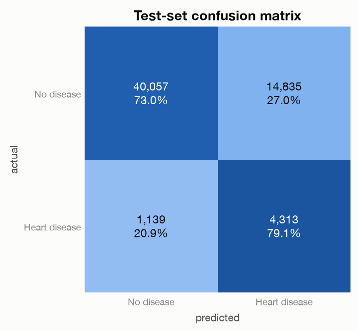
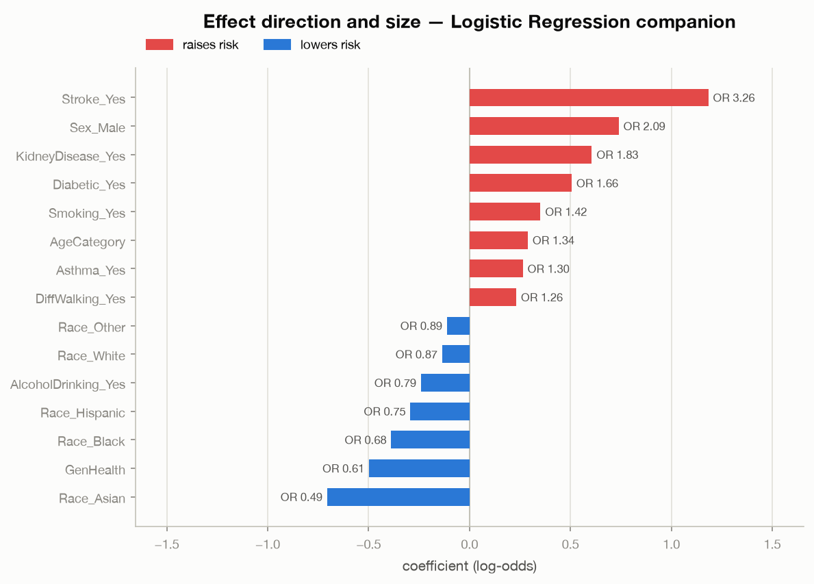

Machine Learning · Public Health Data
Heart disease
risk prediction.
How well can lifestyle and demographic answers on a health survey flag coronary heart disease? A careful, leakage-safe pipeline, and an honest account of what it can and cannot do.
At a glance
- Problem
- How well can lifestyle and demographic answers on a health survey flag coronary heart disease? (301,717 respondents after removing duplicates.)
- Method
- A leakage-safe pipeline; twelve configurations compared (six algorithms, SMOTE or class weighting); CatBoost with class weighting; a threshold tuned for recall with the F2 score.
- Statistics
- Statistics, not physics: class weighting beat SMOTE for every algorithm, because interpolating binary indicators creates meaningless synthetic people.
- Result
- On the test set, recall 0.791 at precision 0.225 (ROC-AUC 0.836, PR-AUC 0.351): suitable for triage into further evaluation, never for a standalone decision.
This is an educational and portfolio project. It is not a medical device, not a diagnostic tool, and not validated for clinical use. The model reflects association, not causation.
Data
The data are the Personal Key Indicators of Heart Disease set from Kaggle, derived from the CDC 2020 BRFSS telephone survey. There are 319,795 respondents, 301,717 after removing 18,078 exact duplicate rows, with 17 predictors (binary, ordinal and categorical) and a binary target. The classes are heavily imbalanced, with about 9% positive cases. The features are coarse categories and rounded numbers, with no clinical measurements such as blood pressure or cholesterol.
Pipeline
Preprocessing standardizes the numeric features (BMI, physical and mental health days, sleep), ordinally encodes age bands and general health, and one-hot encodes race and diabetic status, giving 23 features from the 17 raw columns. Everything, including resampling, sits inside a single pipeline so that information cannot leak from the validation or test data into training. The data are split 60/20/20 (181,029 / 60,344 / 60,344 rows). The validation set is used to choose the algorithm and the decision threshold, and the test set is touched once at the end. All random seeds are fixed to 42.
Model selection
I compared twelve configurations: six algorithms (CatBoost, LightGBM, XGBoost, random forest, decision tree and logistic regression) with two ways of handling imbalance, SMOTE and class weighting.

The imbalance strategy mattered more than the algorithm. SMOTE lowered the PR-AUC of the gradient-boosted models by up to 0.07, because interpolating between binary indicators creates meaningless synthetic people (for example a "37% smoker"). Class weighting worked better for tree-based models, and CatBoost with class weighting was the best configuration.
Choosing the threshold
For screening, missing a case is worse than a false alarm, so the threshold was tuned on the validation set with the F2 score, which weights recall four times as much as precision. The chosen threshold is 0.505.

Results on the test set
The test set was evaluated once.
| Metric | Value |
|---|---|
| PR-AUC | 0.351 |
| ROC-AUC | 0.836 |
| Recall | 0.791 |
| Precision | 0.225 |
| F2 | 0.527 |

The model finds 79.1% of true cases (4,313 of 5,452), but precision is 0.225: about three of every four flags are false alarms, and 27.0% of healthy respondents are flagged. That makes it suitable only for triage into further evaluation, never for a standalone decision.

What drives the prediction
A linear model fitted alongside the boosted trees gives readable odds ratios. The top predictors are age (an odds ratio of 1.34 per age band), prior stroke (3.26), male sex (2.09), kidney disease (1.83) and diabetes (1.66). Better self-reported general health lowers the risk (0.61 per step toward "Excellent").

Code
The notebooks, the fitted pipeline and the exported reports are at github.com/miladshirani/Heart-Disease-Prediction ↗. The notebook runs in a few minutes.